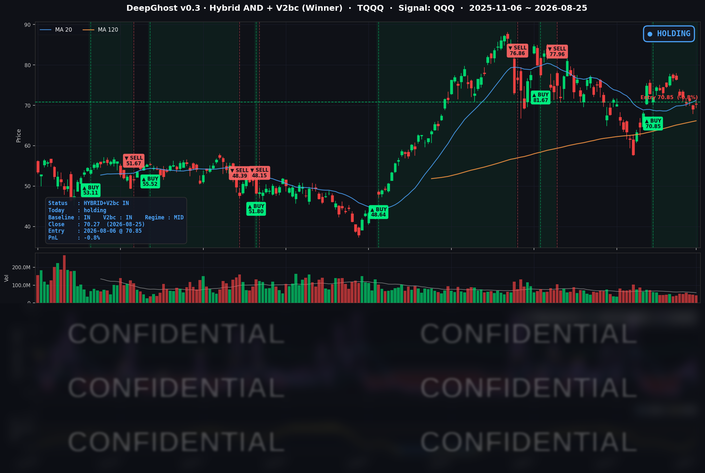

👻 매일 시그널과 히스토리를 홈페이지에서 한눈에 → www.ghostai.co.kr
내일 이후 방향을 잡으려 하는 듯 합니다. 내일 아침에 근원 물가 지표가, 장 마감 후에 엔비디아 실적이 나옵니다. 시장이 어려울수록 감이 아니라 룰대로 가시기 바랍니다.
📊 오늘의 매매 신호
| 항목 | 내용 |
|---|---|
| 오늘 할 일 | ✅ 아무것도 안 해도 됩니다 |
| 포지션 상태 | 📈 TQQQ 보유 중 (IN POSITION) |
| 매수 진입일 | 2026-08-06 (14거래일째) |
| 진입가 → 현재가 | $70.85 → $70.27 |
| 현재 포지션 수익 | -0.82% |
TQQQ 시그널 — IN POSITION
현재 상태: 매수 포지션 유지 중 | 이번 포지션 수익률 -0.82%

전략의 TQQQ 트랙은 8월 6일 진입 자리를 14거래일째 유지하고 있습니다. TQQQ가 하루 +1.83% 오르면서 평가손익은 -2.60% → -0.82%로 1.78%포인트 회복했습니다. 진입가 $70.85까지 +0.83%를 남겨둔 자리입니다.
청산 신호까지의 여유가 크게 넓어졌습니다
어제 "엔비디아 실적 전에 매도 신호가 나올 수도 있겠다"고 적었습니다만, 오늘 장마감후 모델 시그널은 그와 반대로 움직였습니다.
다만 이 여유를 "안전"으로 읽기는 무리가 있습니다. 내일이 중요한 분기점입니다. 아침 8시 30분(현지)에 연준이 가장 중시하는 물가 지표인 7월 근원 개인소비지출(PCE)이 나오고, 장이 끝난 뒤에는 엔비디아의 실적이 나옵니다. 과거 엔비디아 실적 다음 날 나스닥100이 움직인 폭을 되짚어 보면, 일곱 번 중 두 번은 매도 시그널이 나올만큼 움직임이 컷습니다.
오늘 미국 시장 — 시황 요약
지수 마감
| 지수 | 종가 | 등락률 |
|---|---|---|
| S&P 500 | 7,677.28 | +0.32% |
| 나스닥 종합 | 26,151.30 | +0.66% |
| 다우존스 | 53,577.40 | +0.30% |
| 러셀 2000 | 3,010.02 | +0.50% |
| QQQ (나스닥100) | 710.72 | +0.62% |
지수 넷이 모두 올랐고 나스닥이 다우를 앞섰습니다. 어제 다우가 나스닥을 1%포인트 넘게 앞섰던 것과 반대입니다.
그런데 지수 아래를 보면 어제와 정반대의 문제가 있습니다. S&P 500 편입 종목을 직접 집계하면 오른 종목 202개, 내린 종목 291개로 내린 쪽이 89개 많았습니다. 같은 비중으로 평균 내면 -0.12%, 중앙값은 -0.25%입니다. 12개 섹터 중 7개가 하락했고, 2% 넘게 오른 종목(38개)보다 2% 넘게 빠진 종목(55개)이 더 많았습니다.
어제는 "지수는 빠졌는데 평균 종목은 올랐다"였고, 오늘은 "지수는 올랐는데 평균 종목은 빠졌다"입니다. 이틀을 묶어 보면 시장은 제자리이고, 안에서 주인공만 바뀐 셈입니다. 오늘의 상승은 폭이 넓어서가 아니라 소수 대형주에 집중돼서 만들어졌습니다.
국채 금리 동향
| 만기 | 수익률 | 전일 대비 |
|---|---|---|
| 3개월 | 3.705% | +0.2bp |
| 5년 | 4.351% | -5.7bp |
| 10년 | 4.639% | -6.5bp |
| 30년 | 5.174% | -5.7bp |
장단기 스프레드(10년-3개월)는 100.1bp → 93.4bp로 좁혀졌습니다. 여전히 정상적인 우상향 곡선이고 역전은 없습니다.
모양이 중요합니다. 3개월물은 사실상 움직이지 않았는데(+0.2bp) 5년~30년 구간만 6bp 안팎 내려왔습니다. 단기 정책금리 기대는 그대로인 채 중장기만 눌린 형태라, 9월 금리 인하 기대가 새로 강해진 결과라기보다 유가 급락에 따른 물가 기대 후퇴로 보는 편이 맞습니다.
장기금리 하락은 듀레이션이 긴 성장주에 직접적인 완화 요인입니다. 지난주 30년물이 5.3%대까지 올라 증시를 눌렀던 것을 감안하면 오늘 상승의 실질적 엔진은 여기였습니다. 다만 30년물 5.174%는 절대 수준으로 여전히 높아 구조적 부담은 그대로 남아 있습니다.
연준 발언 & 금리 패스
8월 25일에 예정된 연준 인사의 공개 발언은 없었습니다. 연준 공식 캘린더 기준 8월 24일부터 27일까지 연설·출연이 아예 없습니다. 잭슨홀 심포지엄 직전의 관례적인 공백입니다.
그래서 오늘 금리 하락은 연준 발언이 아니라 유가와 지표 기대가 만든 것으로 읽어야 합니다.
8월 28일 오전 10시(현지) 케빈 워시 의장의 잭슨홀 기조연설이 예정돼 있습니다. 의장 취임 후 첫 잭슨홀이고, 9월 16일 FOMC를 19일 앞둔 시점이라 정책 경로 신호로서 무게가 큽니다. 같은 날 오후에는 보먼 감독 부의장의 대담도 있습니다. 순서는 내일 물가 지표 → 금요일 워시 의장입니다.
오늘의 핵심 이슈
1. "반도체가 반등했다"는 헤드라인은 일부만 맞습니다
어제 메모리주를 무너뜨린 재료는 "미 행정부가 애플의 중국산 메모리 구매를 허용할 수도 있다"는 주말 보도였습니다. 오늘 이 논리를 무너뜨린 것은 정부의 부인이 아니라 애널리스트들의 산업 논리 반박이었습니다. 중국 CXMT는 저물량 맥 1개 모델에서만 품질 승인을 통과했고 아이폰에서는 0건이며, 수율 문제로 애플에 의미 있는 규모를 공급하는 것이 구조적으로 불가능하다는 분석입니다. 고대역폭 메모리(HBM)를 만들지 못해 AI 영역의 위협도 아니고, 2026년 생산능력은 이미 배정이 끝났으며 가격도 기존 업체보다 싸지 않다는 점이 함께 지적됐습니다. 다만 정책에 대한 공식 해명은 여전히 없습니다. 9월 하순 시진핑 주석 방미가 다음 분기점입니다.
참고로 방향은 오히려 반대쪽 증거가 더 많습니다. 엔비디아는 8월 22일 주요 고객사에 메모리 원가를 이유로 AI칩 가격을 15% 이상 올리겠다고 통보했습니다(블룸버그). 마이크론은 8월 들어서만 +13.36%입니다.
2. 소비자신뢰지수 7개월 최저
8월 콘퍼런스보드 소비자신뢰지수는 89.4로 시장 예상치 90.2를 밑돌았습니다. 7개월 최저이자 2개월 연속 하락입니다(7월 수정치 90.2 대비 -0.8).
구조가 더 중요합니다. 지금 형편이 어떠냐는 현재상황지수는 +6.8 올라 4개월 만에 처음 개선됐는데, 앞으로 6개월을 묻는 기대지수는 -5.8 급락해 68.2가 됐습니다. 콘퍼런스보드가 침체 기준선으로 삼는 80을 11.8포인트나 밑도는 수치입니다. 1년 기대 인플레이션도 5.6% → 5.8%로 올라 관세 부담이 가계 인식에 반영되고 있음을 보여줍니다.
지표가 나빴는데 주가가 오른 이유는 단순합니다. 약한 지표가 금리를 눌렀고, 눌린 금리가 성장주를 밀어 올렸습니다. 전형적인 "나쁜 뉴스가 좋은 뉴스" 반응입니다.
3. 유가 5% 급락이 오늘의 진짜 매크로 변수였습니다
베선트 재무장관이 예고한 대이란 추가 제재가 시장 예상보다 완만했고, 외교적 진전 신호까지 겹치면서 WTI가 -5.01% 급락했습니다. 8월 들어 가장 큰 일간 낙폭입니다. 이것이 장기금리 6bp 하락의 실질적 동인이고, 내일 물가 지표를 앞둔 심리적 완충으로도 작용했습니다. 뒤집어 말하면 유가가 되돌아오면 이 완화 요인은 즉시 사라집니다.
변동성 & 투자심리
- VIX (변동성 지수): 15.85 → 15.45 (-2.52%). 20일 평균(15.72)과 60일 평균(16.95)을 모두 밑돕니다.
- 공포탐욕지수: 약 55로 중립과 탐욕의 경계선입니다. (당일 확정치를 1차 출처에서 확인하지 못해 범위로만 적습니다.)
VIX는 장중 한때 16.30까지 올랐다가 15.45로 마감했습니다(종가 위치 27%). 낮에 한 차례 불안이 있었지만 종가로 갈수록 해소된 모양입니다.
다만 표면과 내부가 엇갈립니다. 낙관 쪽에는 지수 4종 전부 상승, VIX 하락, 금리 하락이 있고, 반대쪽에는 상승 대비 하락 종목 우위(202:291), 12개 섹터 중 7개 하락, 침체선을 밑도는 소비자 기대지수가 있습니다. 오늘은 시장이 방향을 정한 날이 아니라, 내일의 지표와 실적을 기다리며 자리를 옮겨 앉은 날입니다.
매크로 & 원자재
- 유가: WTI $80.75 (-5.01%), 원유 ETF(USO) -4.58%. USO는 종가 위치 2%로 장 마감까지 매도가 이어졌습니다. 8월 20일 고점 대비 -9.3%입니다.
- 금: GLD(금 ETF) 기준 +0.32%. 갭 하락으로 출발했다가 장중 내내 올라 종가 위치 99%로 마감했습니다.
유가가 빠지는데 금은 종가까지 올랐습니다. 물가 압력 완화와 안전자산 수요가 동시에 나타난 조합이라, 순수한 위험선호 장세는 아니었다는 뜻입니다.
배경에서 미국-캐나다 무역 마찰은 계속 커지고 있습니다. 8월 22일 발효된 약 200억 달러 규모 캐나다산 제품에 대한 50% 관세에 대해, 캐나다는 9월 8일부터 동일 규모의 맞대응을 예고했습니다. 오늘 시장은 이를 무시했지만(원유가 양측 관세 대상에서 모두 제외된 점이 컸습니다), 관세 전가는 시차를 두고 물가에 위쪽 압력으로 작동합니다.
주요 종목 동향
| 종목 | 종가 | 등락률 | 비고 |
|---|---|---|---|
| NFLX | 82.23 | +2.77% | 종가 위치 93% — 종일 매집. 5일 +5.73% |
| MU | 932.97 | +2.48% | CXMT 반박 최대 수혜. 8월 누적 +13.36% |
| NVDA | 213.05 | +2.19% | 7거래일 연속 하락 마감을 끊었습니다. 실적 전일, 장중에도 추가 상승 |
| META | 570.05 | +1.97% | 종가 위치 92%. 이틀 연속 강세 |
| QCOM | 160.56 | +1.28% | 상승분 대부분이 시초가 갭 |
| MSFT | 491.71 | +0.90% | |
| TSLA | 350.25 | +0.37% | 장중 고가 357.00 대비 종가는 부진 |
| INTC | 87.48 | +0.25% | 갭 +3.03%를 전량 반납, 종가 위치 7%. 5일 -9.53% |
| AAPL | 309.90 | -0.14% | CXMT 이슈 당사자인데 반도체 반등에 동참하지 못했습니다 |
| GOOGL | 346.96 | -0.32% | |
| AMZN | 261.06 | -0.39% | |
| AVGO | 356.74 | -0.56% | 반도체 5종 중 유일한 하락. 갭업 후 반락, 5일 -6.12% |
커버리지 12종은 상승 8 / 하락 4로, 어제(상승 6 / 하락 6)보다 개선됐고 하락 4종은 모두 -0.6% 이내의 소폭입니다. 다만 AVGO와 INTC는 5일 기준으로 각각 -6.12%, -9.53%로 커버리지 최악입니다. 반도체 반등이 메모리와 AI GPU에만 한정되고 커스텀 칩·파운드리 쪽으로는 번지지 않았다는 뜻입니다.
이번 주 일정
- 8/26 (수) — 이번 주 최대 분수령. 아침 08:30 ET에 7월 근원 PCE 물가와 2분기 GDP 2차 추정치가 동시에 나오고, 장 마감 후 엔비디아 실적(회사 가이던스 매출 910억 달러 ±2%, 시장 기대 919~922억 달러, 콜 17:00 ET)이 발표됩니다. 엔비디아는 최근 8개 분기 중 6개 분기에서 실적 발표 후 주가가 내렸습니다.
- 8/27~29 — 잭슨홀 심포지엄 (주제: Financial Innovation).
- 8/28 (금) — 10:00 ET 워시 의장의 잭슨홀 첫 기조연설, 12:45 ET 보먼 부의장 대담.
- 9/8 — 캐나다 보복 관세 발효. 9/16 — FOMC.
Ghost.AI — Quantitative AI Investment
Model: DeepGhost v0.3 | Transformer-Based Deep Learning
Coverage: 13 tickers | Updated every trading day after US market close
⚠️ 본 자료는 정보 제공 목적으로만 작성되었으며 투자 권유가 아닙니다. 모든 투자의 책임은 투자자 본인에게 있습니다. 과거 성과가 미래 수익을 보장하지 않습니다.
[유의사항]
- 본 서비스는 불특정 다수를 대상으로 발행되는 단방향 정보 제공 서비스이며, 투자자 개인의 재산 상황·투자 목적·위험 선호도를 반영한 개별 투자 조언이 아닙니다.
- 고스트에이아이 주식회사는 고객과 쌍방향 의사소통(개별 상담, 맞춤형 자문 등)을 제공하지 않습니다.
- 본 콘텐츠는 투자 권유 또는 매매 주문의 청약·청약의 권유에 해당하지 않으며, 최종 투자 판단 및 그에 따른 손익의 책임은 전적으로 투자자 본인에게 있습니다.
고스트에이아이 주식회사